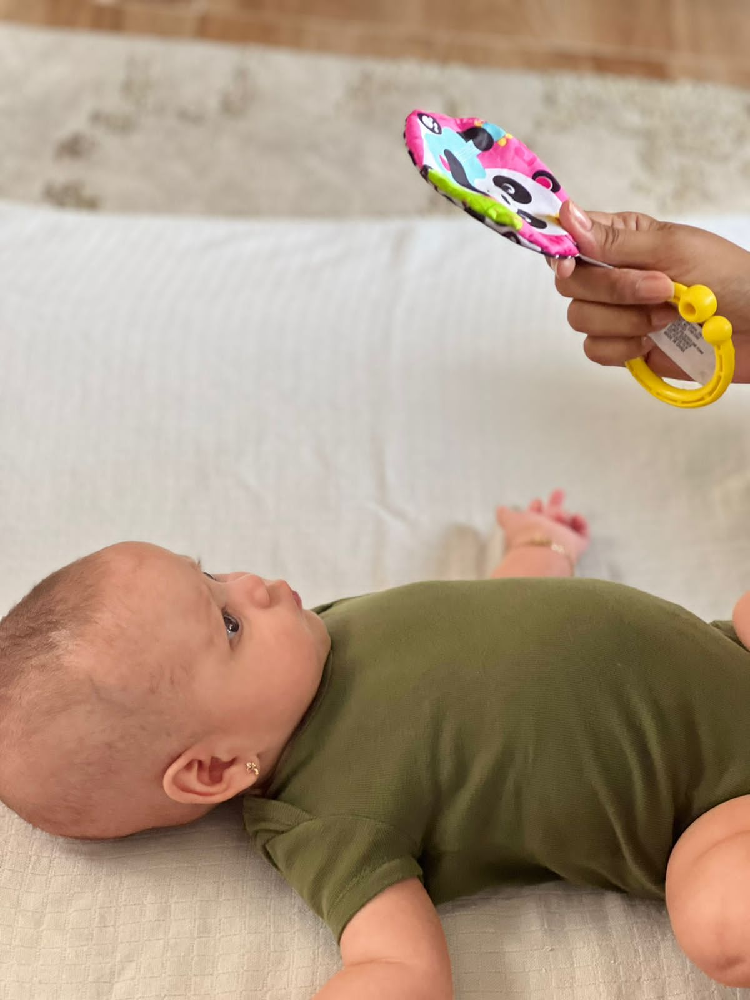
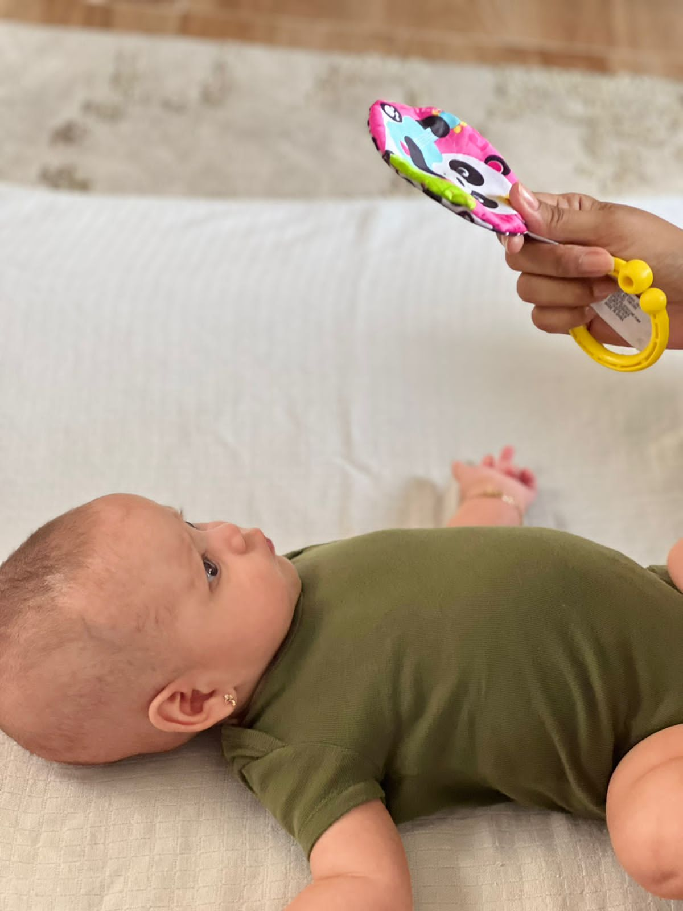

La práctica de la estimulación temprana es necesario aplicarla en niños menores de 3 años porque esto le permitirá al niño desarrollar habilidades físicas y psicológicas. Al aplicar la estimulación de manera correcta, repetitiva y en edades tempranas podremos percibir grandes resultados como son: capacidad de concentración para un desenvolvimiento verbal correcto y sustancial, incremento sociable y desarrollo de habilidades que permitan al niño realizar tareas de manera individual.
Rainbow Baby recomienda no solo buscar ayuda profesional de un fisioterapeuta; sino aplicar este tipo de técnicas dentro del hogar principalmente por ser la zona de confort del niño y tienden a ejecutar acciones con mayor facilidad y sin miedo a lograrlas al observar a sus padres cerca de ellos motivando cada día nuevas habilidades.